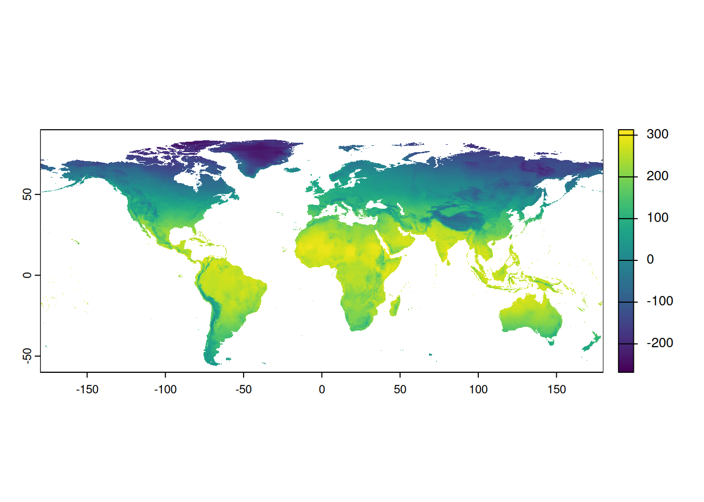

library(letsR)
library(sf)
library(ggplot2)
library(viridisLite)
library(tmap)
library(here)Patrones geográficos de riqueza de especies
Áreas de distribución y patrones geográficos de riqueza
“To do science is to search for repeated patterns, not simply to accumulate facts” R. MacArthur
- A partir de las distribuciones geográficas de las especies es posible describir y evaluar diferentes patrones de biodiversidad que emergen cuando estudiamos conjuntos de especies (y no a nivel indivual)
Áreas de distribución y patrones geográficos de riqueza
- En este ejercicio veremos cómo usar las distribuciones de las especies (polígonos, como los que generamos en el ejercicio anterior) para generar el patrón geográfico de riqueza de especies
Los datos (polígonos) son del orden PRIMATES (MAMMALIA) obtenidos de la IUCN
Paquetes necesarios:
letsR (Vilela & Villalobos 2015 MEE)
Cargar los polígonos de las especies de interés (shapefiles en su carpeta de trabajo)
primates_maps <- st_read(here("dados","primates_maps.shp"))Reading layer `primates_maps' from data source
`/home/luisd/Dropbox/darcyDB/PDRF/R-biodiversidad-2025/dados/primates_maps.shp'
using driver `ESRI Shapefile'
Simple feature collection with 915 features and 28 fields
Geometry type: MULTIPOLYGON
Dimension: XY
Bounding box: xmin: -99.2274 ymin: -34.83983 xmax: 141.9292 ymax: 41.54623
Geodetic CRS: WGS 84. . .
Conocer el dominio (“extent”) de los datos, para usarlo después en la delimitación del espacio (geográfico) de trabajo
st_bbox(primates_maps) xmin ymin xmax ymax
-99.22740 -34.83983 141.92917 41.54623 Crear una matriz de presencia-ausencia a partir de los polígonos
primates.pam <- lets.presab(primates_maps, xmn = -100,xmx = 141, ymn = -35, ymx = 42, resol=1, count=T)
|
| | 0%
|
| | 1%
|
|= | 1%
|
|= | 2%
|
|== | 2%
|
|== | 3%
|
|=== | 4%
|
|=== | 5%
|
|==== | 5%
|
|==== | 6%
|
|===== | 6%
|
|===== | 7%
|
|===== | 8%
|
|====== | 8%
|
|====== | 9%
|
|======= | 9%
|
|======= | 10%
|
|======= | 11%
|
|======== | 11%
|
|======== | 12%
|
|========= | 12%
|
|========= | 13%
|
|========= | 14%
|
|========== | 14%
|
|========== | 15%
|
|=========== | 15%
|
|=========== | 16%
|
|============ | 17%
|
|============ | 18%
|
|============= | 18%
|
|============= | 19%
|
|============== | 19%
|
|============== | 20%
|
|============== | 21%
|
|=============== | 21%
|
|=============== | 22%
|
|================ | 22%
|
|================ | 23%
|
|================= | 24%
|
|================= | 25%
|
|================== | 25%
|
|================== | 26%
|
|=================== | 26%
|
|=================== | 27%
|
|=================== | 28%
|
|==================== | 28%
|
|==================== | 29%
|
|===================== | 29%
|
|===================== | 30%
|
|===================== | 31%
|
|====================== | 31%
|
|====================== | 32%
|
|======================= | 32%
|
|======================= | 33%
|
|======================= | 34%
|
|======================== | 34%
|
|======================== | 35%
|
|========================= | 35%
|
|========================= | 36%
|
|========================== | 37%
|
|========================== | 38%
|
|=========================== | 38%
|
|=========================== | 39%
|
|============================ | 39%
|
|============================ | 40%
|
|============================ | 41%
|
|============================= | 41%
|
|============================= | 42%
|
|============================== | 42%
|
|============================== | 43%
|
|=============================== | 44%
|
|=============================== | 45%
|
|================================ | 45%
|
|================================ | 46%
|
|================================= | 46%
|
|================================= | 47%
|
|================================= | 48%
|
|================================== | 48%
|
|================================== | 49%
|
|=================================== | 49%
|
|=================================== | 50%
|
|=================================== | 51%
|
|==================================== | 51%
|
|==================================== | 52%
|
|===================================== | 52%
|
|===================================== | 53%
|
|===================================== | 54%
|
|====================================== | 54%
|
|====================================== | 55%
|
|======================================= | 55%
|
|======================================= | 56%
|
|======================================== | 57%
|
|======================================== | 58%
|
|========================================= | 58%
|
|========================================= | 59%
|
|========================================== | 59%
|
|========================================== | 60%
|
|========================================== | 61%
|
|=========================================== | 61%
|
|=========================================== | 62%
|
|============================================ | 62%
|
|============================================ | 63%
|
|============================================= | 64%
|
|============================================= | 65%
|
|============================================== | 65%
|
|============================================== | 66%
|
|=============================================== | 66%
|
|=============================================== | 67%
|
|=============================================== | 68%
|
|================================================ | 68%
|
|================================================ | 69%
|
|================================================= | 69%
|
|================================================= | 70%
|
|================================================= | 71%
|
|================================================== | 71%
|
|================================================== | 72%
|
|=================================================== | 72%
|
|=================================================== | 73%
|
|=================================================== | 74%
|
|==================================================== | 74%
|
|==================================================== | 75%
|
|===================================================== | 75%
|
|===================================================== | 76%
|
|====================================================== | 77%
|
|====================================================== | 78%
|
|======================================================= | 78%
|
|======================================================= | 79%
|
|======================================================== | 79%
|
|======================================================== | 80%
|
|======================================================== | 81%
|
|========================================================= | 81%
|
|========================================================= | 82%
|
|========================================================== | 82%
|
|========================================================== | 83%
|
|=========================================================== | 84%
|
|=========================================================== | 85%
|
|============================================================ | 85%
|
|============================================================ | 86%
|
|============================================================= | 86%
|
|============================================================= | 87%
|
|============================================================= | 88%
|
|============================================================== | 88%
|
|============================================================== | 89%
|
|=============================================================== | 89%
|
|=============================================================== | 90%
|
|=============================================================== | 91%
|
|================================================================ | 91%
|
|================================================================ | 92%
|
|================================================================= | 92%
|
|================================================================= | 93%
|
|================================================================= | 94%
|
|================================================================== | 94%
|
|================================================================== | 95%
|
|=================================================================== | 95%
|
|=================================================================== | 96%
|
|==================================================================== | 97%
|
|==================================================================== | 98%
|
|===================================================================== | 98%
|
|===================================================================== | 99%
|
|======================================================================| 99%
|
|======================================================================| 100%¿Cómo se ve el patrón geográfico?
. . .
plot(primates.pam)
¿Qué tiene el objeto que se graficó?
primates.pam$Richness_Rasterclass : SpatRaster
dimensions : 77, 241, 1 (nrow, ncol, nlyr)
resolution : 1, 1 (x, y)
extent : -100, 141, -35, 42 (xmin, xmax, ymin, ymax)
coord. ref. : +proj=longlat +datum=WGS84 +no_defs
source(s) : memory
name : lyr.1
min value : 0
max value : 33 Vamos a verlo en ggplot
. . .
Primero, convertimos el raster en un data.frame
rdf <- as.data.frame(primates.pam$Richness_Raster, xy=TRUE) #Convert raster to data.frame
names(rdf)[3] <- 'richness' #Name value column
head(rdf) x y richness
1 -99.5 41.5 0
2 -98.5 41.5 0
3 -97.5 41.5 0
4 -96.5 41.5 0
5 -95.5 41.5 0
6 -94.5 41.5 0rdf2 <- rdf
rdf2[,3] <- ifelse(rdf[,3]==0,NA,rdf[,3])
head(rdf2) x y richness
1 -99.5 41.5 NA
2 -98.5 41.5 NA
3 -97.5 41.5 NA
4 -96.5 41.5 NA
5 -95.5 41.5 NA
6 -94.5 41.5 NAAhora sí, lo graficamos
ggplot(data = rdf2)+
geom_raster(mapping=aes(x=x, y=y, fill=richness))+
scale_fill_gradientn(colours= rev(inferno(10)), name='Richness')
¿Qué más podemos hacer con esto?
. . .
Por ejemplo, relacionar el patrón de riqueza con alguna variable ambiental
. . .
Carguemos una variable ambiental (temperatura máxima, que viene de WorldClim)
temp <- rast(here("dados","bio1.bil"))
plot(temp)temp <- rast(here("dados","bio1.bil"))
plot(temp)
Ahora, podemos extraer ambos valores/variables de interés: riqueza y temperatura
¿Cómo? . . .
library(dplyr)
Attaching package: 'dplyr'The following objects are masked from 'package:terra':
intersect, unionThe following objects are masked from 'package:stats':
filter, lagThe following objects are masked from 'package:base':
intersect, setdiff, setequal, unionprimates.pam2 <- primates.pam2 <- as_tibble(primates.pam$Presence_and_Absence_Matrix)
primates.richness <- primates.pam2 %>%
mutate(richness=rowSums(primates.pam2[,-c(1:2)])) %>%
select(`Longitude(x)`,`Latitude(y)`,richness) %>%
filter(richness>0)
temp2 <- extract(temp, primates.pam2[,1:2])Ahora ya podemos evaluar la relación entre riqueza y temperatura
plot(primates.richness$richness~temp2$bio1)
. . .
cor.test(temp2$bio1, primates.richness$richness, method="spearman")Warning in cor.test.default(temp2$bio1, primates.richness$richness, method =
"spearman"): Cannot compute exact p-value with ties
Spearman's rank correlation rho
data: temp2$bio1 and primates.richness$richness
S = 1.0509e+10, p-value < 2.2e-16
alternative hypothesis: true rho is not equal to 0
sample estimates:
rho
0.188953